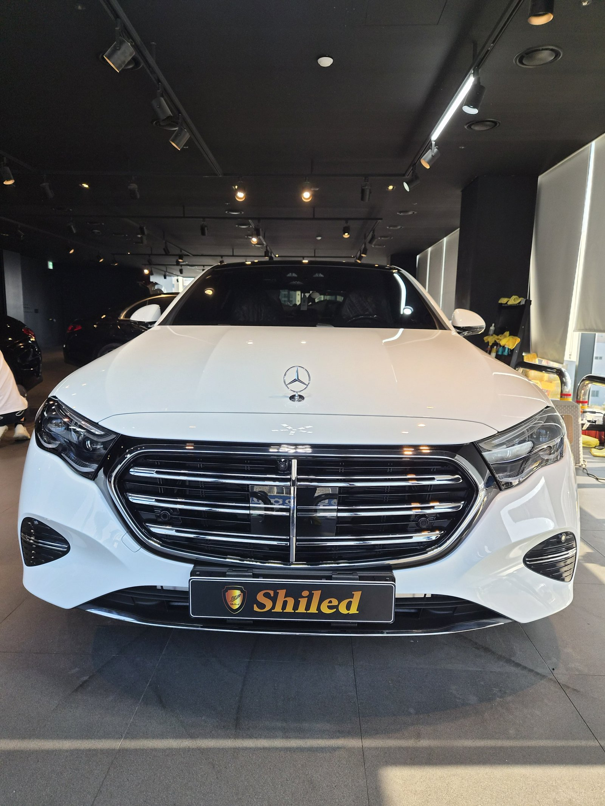
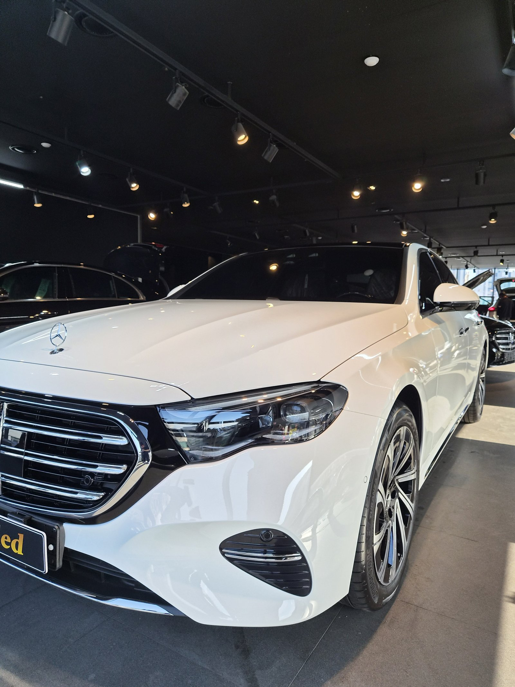
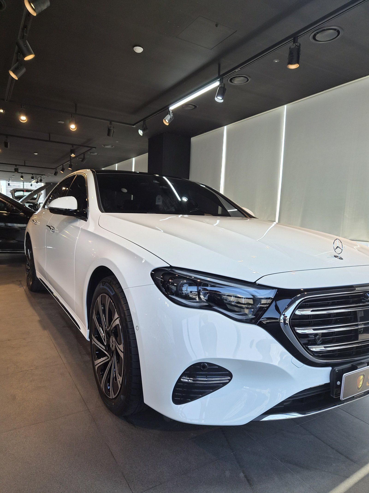
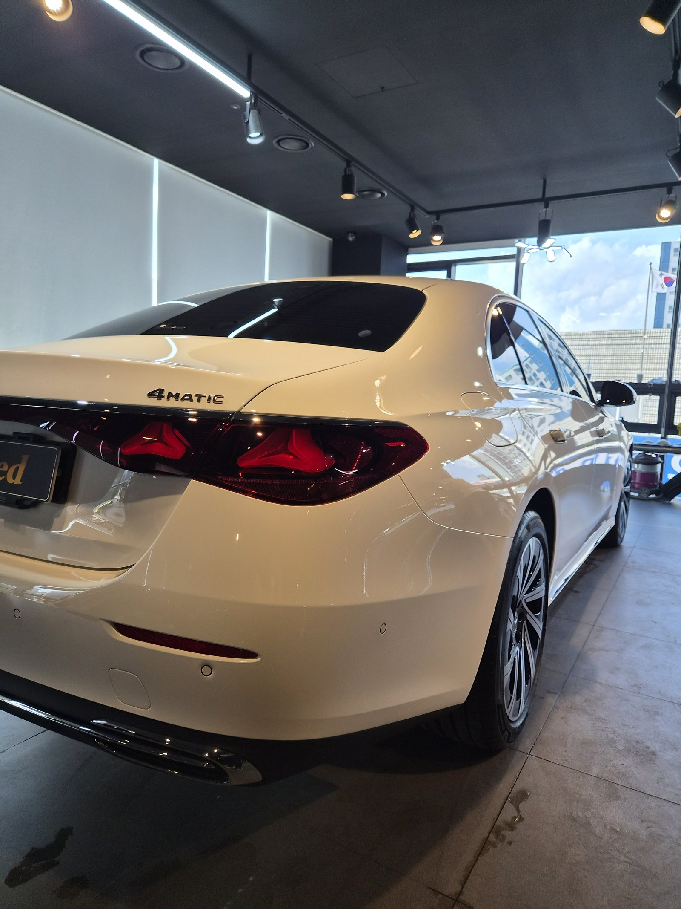
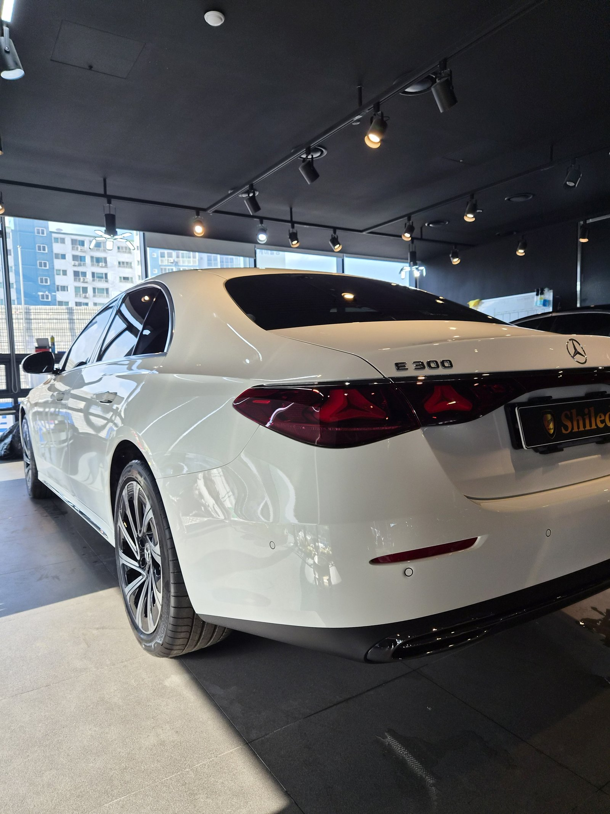
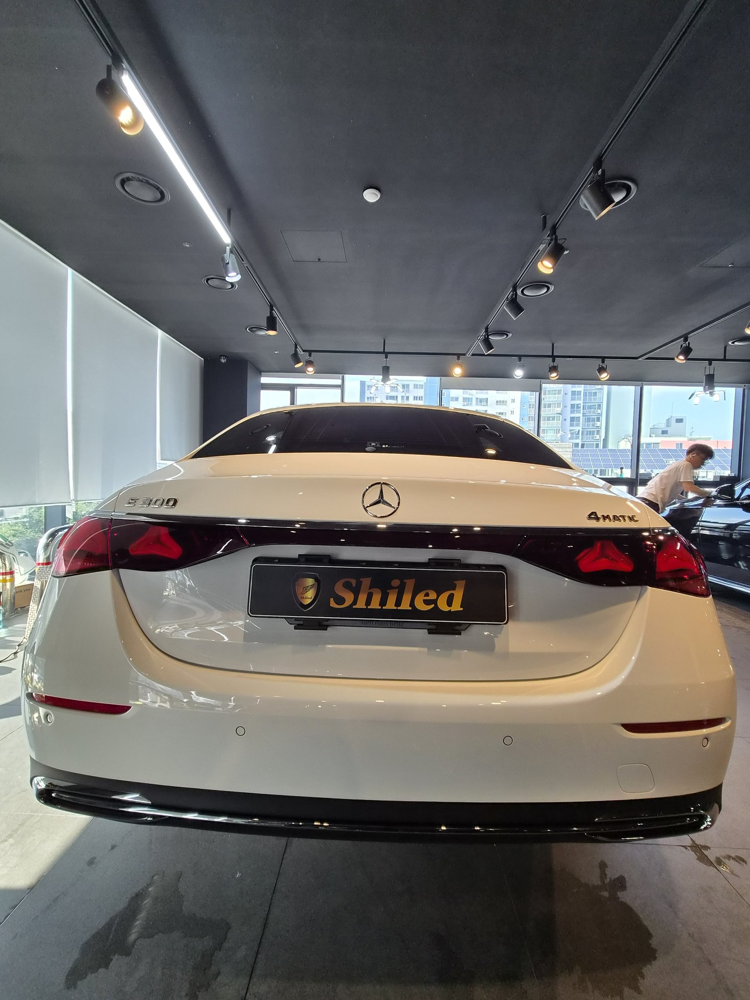

부산 유리막코팅 문의 중 가장 많이 여쭤보시는 게 신차코팅입니다.
이번 차량은 벤츠 E300 4MATIC 백색, 출고 전 새 차입니다.
백색 신차에 맞춰 F5 유리막코팅으로 진행했습니다.

새 차인데 왜 출고 전에 코팅을 하나
도장면이 가장 깨끗할 때 올리는 코팅이 가장 오래갑니다.
출고 후에는 운행과 세차로 미세한 잔기스와 오염이 하나둘 쌓입니다. 그게 쌓이기 전, 신차 상태 그대로일 때 코팅막을 입혀두는 게 핵심입니다. 그래서 부산 유리막코팅을 찾으시는 분들 중 상당수가 출고 전 예약을 잡으십니다.

백색 신차에 왜 F5인가
F5는 색감 깊이를 끌어올려 글로시함을 극대화하는 코팅입니다.
검정에 올리면 발색이 짙어지지만, 백색에 올리면 결이 다릅니다. 백색은 자칫 밋밋하게 보이기 쉬운데, F5를 올리면 도장면의 표면 장력이 살아나면서 맑고 청량한 광택이 살아납니다. 흐린 화이트가 아니라 투명하게 반사되는 화이트가 되는 겁니다. 코팅제는 대표가 화학공학 전공으로 직접 개발·제조한 제품입니다.
기술자의 팁
신차라고 바로 코팅을 올리지 않습니다. 운송·보관 중 묻은 미세 오염을 디테일링 세차와 탈지로 걷어낸 뒤에 올립니다. 특히 백색은 오염이나 잔유분이 남아 있으면 코팅 후에도 얼룩처럼 도드라져 보일 수 있어, 전처리 단계를 더 꼼꼼히 봅니다.

결과: 백색 특유의 청량감
백색 차량은 그릴·사이드미러캡 같은 블랙 하이그로시 파츠와 대비될 때 인상이 가장 또렷해집니다.
F5 코팅 후 도장면 위로 조명이 맺히는 결이 한층 매끈해졌습니다. 후측면에서 봤을 때 리플렉션이 끊기지 않고 길게 이어지는 게 코팅막이 고르게 앉았다는 증거입니다.


모든 시공 차량에는 시공증명서를 발급해 드립니다. 차종·시공일·코팅제 시리얼이 기재되며, 홈페이지에 등록하면 보증도 받으실 수 있습니다. 이 차는 F5 코팅으로 기록됩니다.

자주 묻는 질문
Q. 유리막코팅, 신차도 꼭 필요한가요?
A. 필요합니다. 도장면이 가장 깨끗한 시점이 출고 직후입니다. 운행·세차가 쌓이기 전, 신차 상태 그대로일 때 코팅막을 입혀야 오염과 잔기스를 원천 차단할 수 있습니다.
Q. 백색 신차에는 어떤 코팅이 좋나요?
A. 이 차는 F5로 진행했습니다. F5는 색감 깊이를 끌어올려 글로시함을 극대화합니다. 백색은 자칫 밋밋해 보이기 쉬운데, F5를 올리면 표면 장력이 살아나 맑고 청량한 광택이 도장면 위에 그대로 맺힙니다.
Q. 유리막코팅과 광택은 뭐가 다른가요?
A. 광택은 표면을 연마해 흠집을 줄이고 반사율을 높이는 작업이고, 유리막코팅은 그 위에 유리 성분의 보호막을 입히는 작업입니다. 광택으로 정리한 표면 위에 코팅을 올려야 효과가 오래갑니다.
Q. 신차코팅도 전처리를 하나요?
A. 합니다. 신차라도 운송·보관 중 미세 오염이 묻습니다. 디테일링 세차와 탈지로 표면을 정리한 뒤 코팅을 올려야 제대로 밀착합니다.
Q. 쉴드광택 위치와 예약은 어떻게 하나요?
A. 부산 남구 유엔로220 1F 쉴드광택입니다. 예약·상담은 010-3384-1850, 대표 최한중이 직접 상담하고 책임 시공합니다.
백색 신차일수록 시작점이 다릅니다. 가장 깨끗할 때 맑은 광택을 입혀두십시오.
제품을 직접 만드는 사람이 직접 시공합니다.
부산에서 벤츠 유리막코팅을 고민 중이시면 편하게 연락 주십시오.
어떤 차를 타냐보다 어떻게 타냐가 중요합니다~!
시공 중에는 전화를 받지 못할 때가 많습니다.
카카오톡으로 차종과 원하시는 시공을 남겨주시면 확인 후 답변드립니다.
쉴드광택 · 부산 남구 유엔로220 1F · 대표 최한중